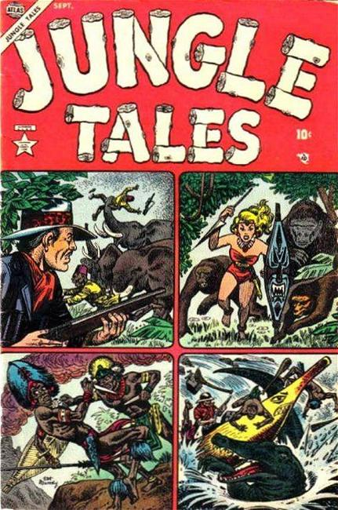

Jungle Tales

Series: 7 issues 1954
Publisher: Atlas (Marvel)
Cover art by Joe Maneely
- "Rampage!", script by Don Rico, pencils by Art Peddy; Movie stunt woman Jane Hastings elects to stay in the Congo at the end of filming a movie; She is given the name "Jann" by the natives.
- "Fire Spirit," script by Don Rico, art by Ogden Whitney; Waku makes an oath of pacifism to his dying father, necessitating that he not participate in the ritual to determine the new king of the Bantus; The kingship is awarded to Mabu, who promptly beings to use the Bantu warriors to enrich himself; Lalei, Waku's girlfriend, pretends to be the spirit of Waku's father and releases him from his oath.
- "The Challenge of the Pit!", script by Don Rico, art by Jack Katz; The lioness Nami has a litter of cubs and their father, Nuba, is determined to train them to be strong and independent.
- "The Fangs of the Big Cat!", art by Sid Greene; Cliff must rescue a amateur hunter from a man-eating tiger.
- "Strange Valley" text story, art by Joe Maneely.